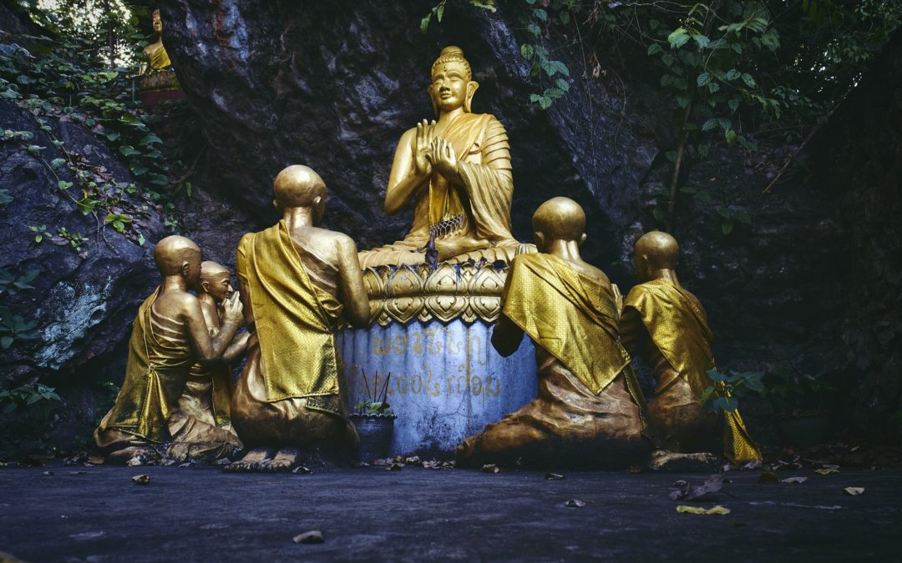
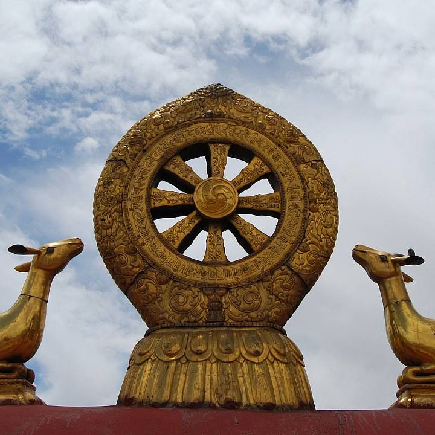

The Four Noble Truths, which Buddha taught, are: 
 The Buddha taught his followers that the end of suffering, as described in the fourth Noble Truths, could be achieved by following an Eightfold Path. In no particular order, the Eightfold Path of Buddhism teaches the following ideals for ethical conduct, mental disciple and achieving wisdom:
Some four centuries after the Buddha’s death, movements arose in India, many of them centred on newly written texts (such as the Lotus Sutra) or new genres of texts (such as the Prajnaparamita or Perfection of Wisdom sutras) that purported to be the word of the Buddha. These movements would come to be designated by their adherents as the Mahayana, the “Great Vehicle” to enlightenment, in contradistinction to the earlier Buddhist schools One of the most important Mahayana sutras for a new conception of the Buddha is the Lotus Sutra (Saddharmapundarika-sutra), in which the Buddha denies that he left the royal palace in search of freedom from suffering and that he found that freedom six years later while meditating under a tree.that did not accept the new sutras as authoritative (that is, as the word of the Buddha). He explains instead that he achieved enlightenment innumerable billions of aeons ago and has been preaching the dharma in this world and simultaneously in myriad other worlds ever since. Because his life span is inconceivable to those of little intelligence, he has resorted to the use of skillful methods (upuya), pretending to renounce his princely life, practice austerities, and attain unsurpassed enlightenment. In fact, he was enlightened all the while yet feigned these deeds to inspire the world. Moreover, because he recognizes that his continued presence in the world might cause those of little virtue to become complacent about putting his teachings into practice, he declares that he is soon to pass into nirvana. But this also is not true, because his life span will not be exhausted for many more billions of aeons. He tells the story of a physician who returns home to find his children ill from having taken poison during his absence. He prescribes a cure, but only some take it. He therefore leaves home again and spreads the rumour that he has died. Those children who had not taken the antidote then do so out of deference to their departed father and are cured. The father then returns. In the same way, the Buddha pretends to enter nirvana to create a sense of urgency in his disciples even though his life span is limitless.